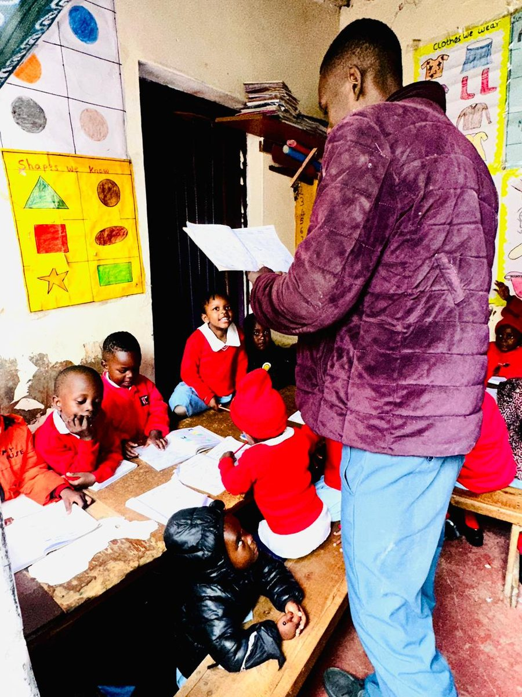

Classes & services
From a child's very first classroom to Grade 8, every stage at Wits Garden is built around our vision: to empower learners, think critically, dream creatively and innovate boldly.
Our classes
Play Group through Grade 8, plus French
Play Group
A gentle, guided introduction to school life — building confidence, language and early social skills through play, songs and hands-on activity in a warm, watchful environment.
PP1 & PP2
Pre-primary foundations in literacy, numeracy and creativity. Learners build the habits — listening, sharing, following instructions — that make the move into Grade 1 smooth and confident.
Grade 1 – Grade 8
Full primary education focused on strong academic fundamentals and critical thinking, delivered by a caring, committed team who know every learner by name.
French
French lessons run alongside the core curriculum, giving learners a valuable extra language, a taste of another culture, and a wider view of the world beyond Dandora.
Values-based learning
Teamwork, competence, understanding excellence, professionalism and respect are taught alongside every subject — modeled by teachers, not just posted on a wall chart.
A safe daily environment
A structured, protective setting in Dandora Phase 5 where children can learn, play and grow without the risks of the streets around them.
Daily care
More than a classroom
A school day at Wits Garden is about more than lessons. Learners have access to clean drinking water throughout the day, and a warm meal is part of the daily routine — small things that matter a great deal in a community where they can't always be taken for granted.
Teachers keep a close eye on every child's wellbeing, not just their workbooks, so problems at home or in class are noticed early rather than left to grow.

Our approach
Grounded in our core values
Every class at Wits Garden is shaped by teamwork, competence, understanding excellence, professionalism and respect — values our teachers model daily, so learners carry them well beyond the classroom.
Lessons are built to get children thinking for themselves, working with others, and expressing ideas confidently — the skills behind our vision to empower learners who think critically, dream creatively and innovate boldly.
Ask about enrollingQuestions
Frequently asked
What ages do you accept for Play Group?
Play Group is our earliest class, designed for young learners just starting their school journey. Reach out to us directly and we'll confirm current age requirements and availability.
What are your school fees and payment terms?
Fees are kept as affordable as possible for families in Dandora. For the current fee structure and payment plans, please contact us directly by phone or WhatsApp — we're happy to talk it through.
What are your school hours and term dates?
For up-to-date school hours, term dates and admission timelines, contact us and our team will share the current schedule.
How do I enroll my child?
Call or WhatsApp us at +254 727 962 716, or visit us in person in Dandora Phase 5. We'll walk you through the classes available and what's needed to get started.